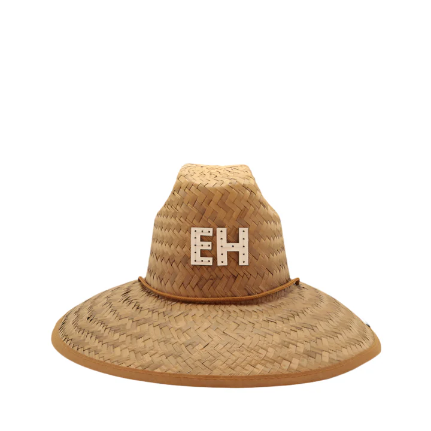
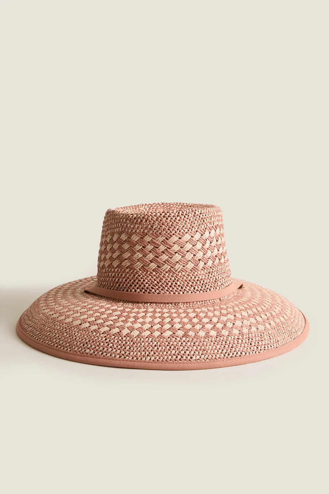
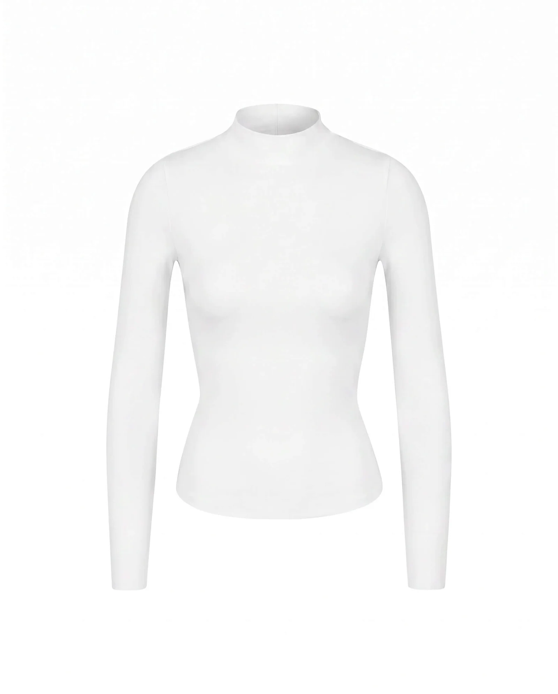
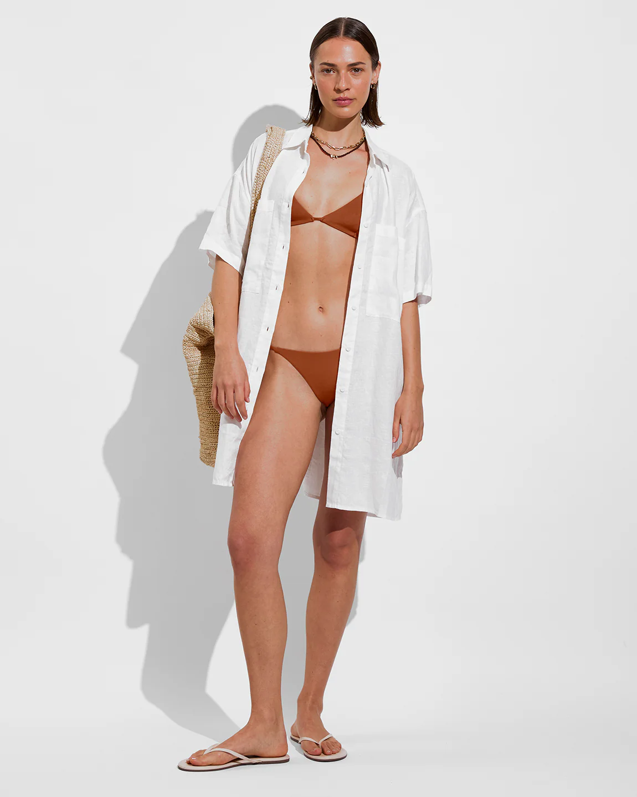
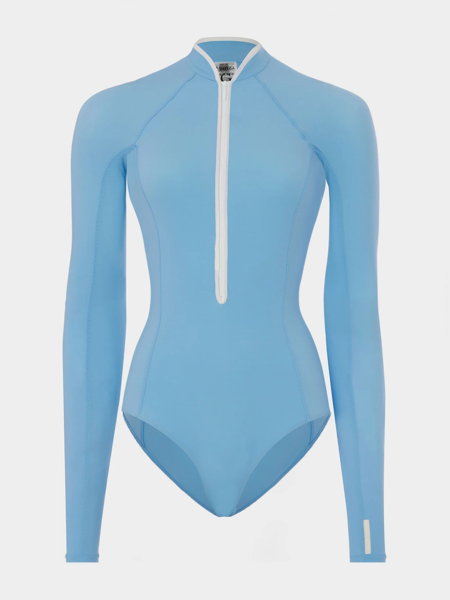
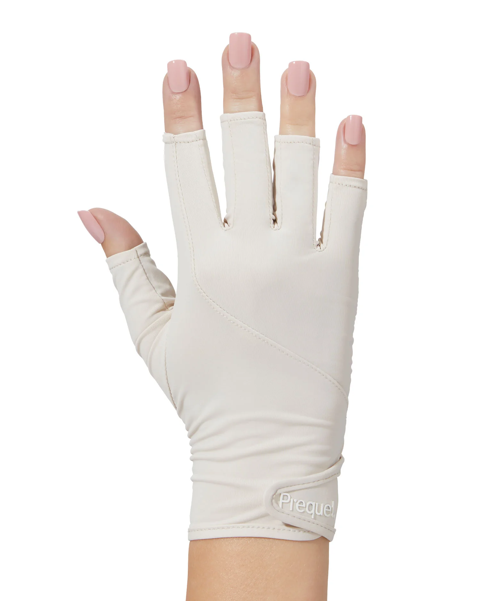

Any time you're going to be in the sun for an extended stretch (a vacation, a beach day, a hike, a summer afternoon outside) is more UV exposure than you've had in months, and your skin is about to pay for it if you're not prepared. UV radiation is the single biggest driver of visible skin aging, responsible for up to 90% of the fine lines, hyperpigmentation, and loss of elasticity that develop over time. Not stress. Not diet. Not genetics. Sun exposure.
The good news: sunscreen works. Consistently and measurably. A well-formulated SPF 50, applied correctly and reapplied regularly, is the most clinically validated anti-aging intervention available, more than retinol, more than vitamin C, more than any serum at any price point. It's also the easiest thing to get wrong.
This guide covers what you need to know, and the products worth using whenever you're going to be in the sun.
Why SPF is your most important anti-aging tool
UV radiation damages skin through two distinct mechanisms that compound over time. UVB rays cause the acute damage you can see immediately — sunburn, redness, inflammation. UVA rays penetrate deeper and cause the slow, cumulative damage you don't notice until years later: collagen breakdown, elastin degradation, hyperpigmentation, and uneven texture.
Both matter. Both require broad-spectrum protection. And the damage is permanent — each unprotected exposure adds to a lifetime total that eventually becomes visible aging. This is not hypothetical. It's documented in dermatology research across decades of longitudinal studies. For women in perimenopause, UV protection matters even more: declining estrogen accelerates photoaging and increases susceptibility to hyperpigmentation.
A landmark 2013 study in the Annals of Internal Medicine tracked participants over 4.5 years and found that daily broad-spectrum sunscreen use resulted in 24% less skin aging compared to discretionary use. A separate Australian study found that consistent daily SPF use measurably reduced the development of melanoma over a 10-year period. The evidence is unambiguous — SPF is not optional skincare. It's preventive medicine.
Mineral vs chemical — what's the actual difference?
This is the question that causes the most confusion in sunscreen, and the answer is simpler than the marketing makes it seem.
- Sits on top of skin and reflects UV rays
- Works immediately on application
- Less irritating — ideal for sensitive skin
- Reef-safe
- Can leave a white cast — especially on deeper skin tones
- Best for: sensitive skin, post-procedure, children
- Absorbs into skin and converts UV to heat
- Needs 15-20 minutes to activate after application
- Lighter texture — no white cast
- Better for everyday wear under makeup
- Can cause irritation on very sensitive skin
- Best for: daily wear, darker skin tones, sport
Neither is inherently better. The best sunscreen is the one you'll actually use consistently — with the right SPF, the right coverage, and the right texture for your skin and lifestyle. On vacation, that often means one formula for the face and a different one for the body.
SPF 30 blocks approximately 97% of UVB rays. SPF 50 blocks approximately 98%. SPF 100 blocks approximately 99%. The difference between SPF 30 and SPF 50 is meaningful, the difference between SPF 50 and SPF 100 is not. Focus on application amount and reapplication frequency over chasing higher numbers.
Update June 2026: the FDA just approved a new sunscreen filter
For the first time in over 25 years, the FDA approved a new sunscreen active ingredient. On June 9, 2026, bemotrizinol (sold globally under the trade name Tinosorb S) was added to the GRASE list, generally recognized as safe and effective for adults and children six months and older.
If you have ever wondered why European sunscreens look and feel so different from American ones, this is the answer. Bemotrizinol has been in use in Europe, Asia, Canada, and Australia since 1999. American consumers have been waiting on the FDA's glacial OTC drug pathway for over two decades. Worth knowing what it is and what changes.
Why bemotrizinol is meaningful
Broad-spectrum on its own. Most chemical UV filters protect against either UVA or UVB but not both, which is why American sunscreens need to combine multiple filters with stabilizers. Bemotrizinol covers both ranges effectively, which simplifies formulations and reduces the total ingredient load on your skin.
Highly photostable. Older chemical filters (especially avobenzone) degrade in sunlight, which is why current US sunscreens require stabilizers to hold them together. Bemotrizinol does not degrade meaningfully across a day of wear. Reapplication every two hours is still the rule, but the molecule itself is sturdier between reapplications.
No white cast. Unlike zinc oxide and titanium dioxide, which dominate mineral SPF, bemotrizinol is fully transparent. This matters most for deeper skin tones, where mineral SPF has long been the wrong choice cosmetically.
Low irritation profile. Early evidence puts bemotrizinol in the low-irritation category for chemical filters, which makes it especially relevant for the reactive skin that perimenopause is producing in many of us. The barrier-compromised skin that cannot tolerate avobenzone may well tolerate this.
September 2026 is the earliest realistic window. BASF (the manufacturer) and the US sunscreen brands have to reformulate, test, and ship. Expect the first products from brands already comfortable with European filters: La Roche-Posay, ISDIN, Avène, Eucerin. Mass-market US brands will follow over the next 6 to 12 months.
What I'd do now
Nothing changes about your current SPF. The sunscreen you wear every morning today is the one that protects you today. When bemotrizinol formulations arrive, evaluate them against the same criteria as any other SPF: how it feels, how often you'll actually use it, whether it earns its place in your stack.
The chemistry-honest read on this approval: it is a genuine win. Not life-changing in the short term, but a meaningful upgrade in the long arc of American sunscreen. The current generation of US chemical filters has always been a step behind what Europe offers cosmetically and structurally, and this closes part of the gap. Worth knowing about. Not worth waiting for.
How to reapply correctly — the step most people skip
Applying sunscreen once in the morning and calling it done is one of the most common SPF mistakes. Protection degrades with UV exposure, sweat, swimming, and towel drying. On a beach day, a single morning application provides very limited protection by noon.
The reapplication rules
Every 2 hours of sun exposure — regardless of SPF level. Higher SPF does not mean longer protection. It means slightly better protection within the same time window.
Immediately after swimming or heavy sweating — even water-resistant formulas need reapplication after water exposure. "Water resistant (80 minutes)" means the SPF is maintained for up to 80 minutes in water, not that it lasts all day after one swim.
Amount matters as much as frequency — most people apply 25-50% of the amount needed for the stated SPF. For the face, a full teaspoon. For the body, a shot glass worth (approximately one ounce) for complete coverage. If you're using less, you're getting less protection than the label states.
The most expensive sunscreen in the world doesn't work if you apply half the amount and don't reapply. Application is the variable, not the formula.
The sunscreens worth actually using
One for your face. One for your body. And one that does both when you need it. Here are the four formulas that earn their place in your bag.

An ultralight water-based formula that applies like a serum and disappears into skin. Zero white cast, no greasiness, and Mediterranean algae extract for an added antioxidant layer. The face sunscreen for people who hate sunscreen.

A 100% mineral SPF 50+ with DNA Repairsomes — photolyase enzymes clinically shown to actively repair UV-damaged DNA in skin cells. Designed specifically for actinic damage prevention. The choice for anyone with sun-damaged or sensitive skin who needs maximum protection.

Water and sweat resistant for 80 minutes, broad-spectrum SPF 50, and enriched with sunflower extract to nourish skin in the sun. Lightweight enough to wear daily but robust enough for active beach days. The body SPF that doesn't feel like sunscreen.

Water resistant for 80 minutes, won't run into eyes, and formulated with Cell-Ox Shield technology combining UVA/UVB filters with antioxidants. Fragrance-free and dermatologist-tested. The one-bottle solution for active beach days when you need face and body covered.

The reapplication secret weapon. A dry oil stick that glides on invisibly over makeup or bare skin, delivering SPF 50 in seconds without the mess of a lotion. Toss it in your bag and swipe it on every two hours — no rubbing, no white cast, no excuses.
Physical protection beyond SPF
Here's the honest thing about SPF: it is the foundation of sun protection, and it is also not enough on its own. SPF wears off. It gets rubbed away. Reapplication is imperfect. It does nothing for the UVA coming through your car window (glass blocks UVB but transmits about 60 percent of UVA, which is the wavelength that drives photoaging). And it does nothing for scalp, ears, and the delicate skin around your eyes when you are actually outside.
The women whose skin ages best are not just the women who wear SPF. They are the women who wear SPF and stack physical protection on top of it. Below are the items that actually earn a place in your sun protection kit. Some are unglamorous. All of them do the work SPF cannot.

The highest-leverage piece of physical sun protection: a wide brim covers face, ears, and neck at once, none of which SPF reliably protects at reapplication frequency. The customizable option, so the hat actually gets worn instead of left in the closet because it did not match anything. Wide brim, packable, and finished the way you want it.

The on-the-water version. UV reflects off water at close to full intensity, which is why you sunburn faster on a boat than on a beach chair. A boat hat is built for the specific conditions: wider brim to shade the double exposure, a shape that stays put in wind, and finishes that hold up to salt and spray. Wear it on the boat, on the paddleboard, and any lake day where the UV is coming at you from two directions at once.
The skin around your eyes is the thinnest on your body and photoages faster than anywhere else. Ray-Ban lenses block 100 percent of UVA and UVB, which is the actual functional bar (not just the trendy silhouette). The Wayfarer covers more of the eye area than the tiny frames photographing everywhere right now, and the shape has held its look since the 1950s for a reason. Sun protection that pairs with everything and lasts longer than a trend cycle.
The elevated version of the long-sleeve cover-up. Structured, oversized, goes over swimwear or a tank without pulling, and reads pulled-together enough for lunch, drinks, or the walk from the beach back to wherever you started. Wear it open for airflow or buttoned when the sun is direct overhead. The one you wear when you want to look like you meant to.

The casual layer you actually reach for. Long-sleeve pullover cut for beach and pool days when you want physical arm coverage without the structure of a button-down or the full outfit of a cover-up dress. Throws on over swim, layers under a jacket for the walk home when the temperature drops, and does the sun protection work that a tank top will not.

The technical cover-up that does the actual UV work. Long sleeves plus certified UPF 50 fabric gives you a physical block that blocks 98 percent of UVA and UVB, without reapplying. Cut as a dress rather than a shirt so you can wear it as a full outfit straight from the water to the walk home. This is the archetypal beach sun protection piece: aesthetic first, but doing the actual chemistry underneath.

The one you actually wear in the water. Long-sleeve swim is the honest answer to sun exposure while you are swimming, because nobody reapplies SPF between waves and pool laps. Hunza's crinkle fabric is stretchy enough to work on the range of bodies midlife brings, forgiving where you want it to be, and iconic enough that it does not read as sun-avoidance the way generic rash guards do. Chest, shoulders, and upper arms covered for the full swim day.

Hands are one of the most photoaged areas on the body and one of the least protected. Chronic exposure at the steering wheel, on the tennis court, gardening, or on outdoor lunches adds up in ways SPF cannot keep up with, because who reapplies sunscreen to their hands every two hours. Car glass blocks UVB but transmits about 60 percent of UVA, which is the wavelength that drives photoaging. Sun gloves solve the whole problem in one pair. Prequel's version pulls on easily, breathes in heat, and looks intentional instead of medical.
The stack that actually protects you: broad-spectrum SPF applied generously and reapplied every two hours, a wide-brim hat outside, UV-blocking sunglasses, a long-sleeve cover-up for extended exposure, and sun gloves for driving and daily hand exposure. That is the honest sun protection kit. SPF alone is the starting point, not the end of the conversation.
The bottom line
An afternoon outside, a beach day, a vacation, a summer of consistent UV exposure: each one is more sun in a few days than many people get in a month. The damage accumulates silently and shows up years later as hyperpigmentation, fine lines, and loss of firmness. But it's entirely preventable with the right SPF, applied in the right amount, reapplied at the right intervals.
Keep one face formula and one body formula in rotation. Apply generously before you head out. Reapply every two hours and after every swim. That's it. No complicated routine, no expensive treatments needed, just consistency with the most evidence-backed step in skincare. If you're building from scratch, the 5-step AM routine is the right place to start.
Your skin in ten years will be a direct reflection of the choices you make today.